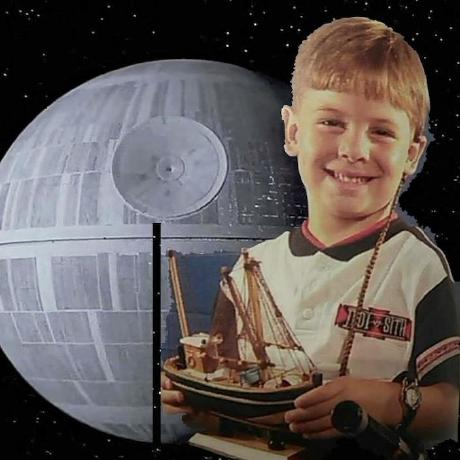

Senior Data Scientist · Zoox
Alex Wallar
A city's streets are full of wasted motion — cars carrying one person, buses no one is riding, people waiting for both. I build the optimization that claws it back: pooling trips into shared rides, predicting demand before it shows up, and moving vehicles to meet it. These days that's robo-taxis at Zoox. Before that, I co-founded The Routing Company out of MIT CSAIL and spent seven years as its CTO, putting on-demand public transit on the ground on three continents.
01Work
2025 — now
Senior Data Scientist · Zoox
R&D fleet orchestration for autonomous ride-hailing. Joined when Zoox licensed The Routing Company's technology.
2018 — 2025
Co-founder & CTO · The Routing Company
MIT spinout building demand-responsive transit — routing algorithms that let public agencies run service where riders actually are, instead of fixed routes past empty stops. Built the engine behind the Pingo platform and deployed it on three continents: Houston, Kitsap County, and a 132-vehicle network in Rochester, NY — among the largest on-demand transit services in North America — plus the Scottish Borders, Dunoon, and suburban Melbourne.
2016 — 2019
PhD Researcher · MIT CSAIL
Distributed Robotics Lab, advised by Daniela Rus. Mobility-on-demand optimization: real-time trip–vehicle assignment, vehicle rebalancing, and dispatch at city scale. Left the program to build The Routing Company full-time.
2016
Robotics Research Intern · Amazon Robotics
Multi-robot path planning and coordination for warehouse automation.
— 2015
BSc (Hons) Computer Science · University of St Andrews
Undergraduate research in motion planning and multi-robot systems.
02Research
My research asks how much a city can move with how few vehicles. The headline answer, from the PNAS study I co-authored at MIT: 3,000 shared vehicles could serve 98% of New York's taxi demand — a result covered by CNN and Forbes. Since then it's been predictive routing, vehicle rebalancing, and high-capacity ridepooling for robo-taxis, with earlier detours into UAV motion planning, acoustic sensor networks, and in-browser eye tracking. 2,400+ citations.
Selected publications
- PNAS 2017 On-demand high-capacity ride-sharing via dynamic trip–vehicle assignment — with Alonso-Mora, Samaranayake, Frazzoli, and Rus. 1,700+ citations.
- IROS 2018 Vehicle rebalancing for mobility-on-demand systems with ride-sharing.
- IROS 2017 Predictive routing for autonomous mobility-on-demand systems with ride-sharing.
- RA-L 2026 Accelerating high-capacity ridepooling in robo-taxi systems.
- US Patent On-demand high-capacity ride-sharing via dynamic trip–vehicle assignment with future requests, 2023.
At MIT: Lemelson Presidential Fellow · MIT Diversity Fellow · Shell-MIT Energy Fellow
03Open source
A few projects I keep coming back to — from Go plumbing to a differentiable model of the global chip supply chain.
04Contact
Always happy to talk about dispatch optimization, transit, robotics, or a routing problem that's keeping you up at night. Email is the fastest way to reach me: alex@wallar.me.
